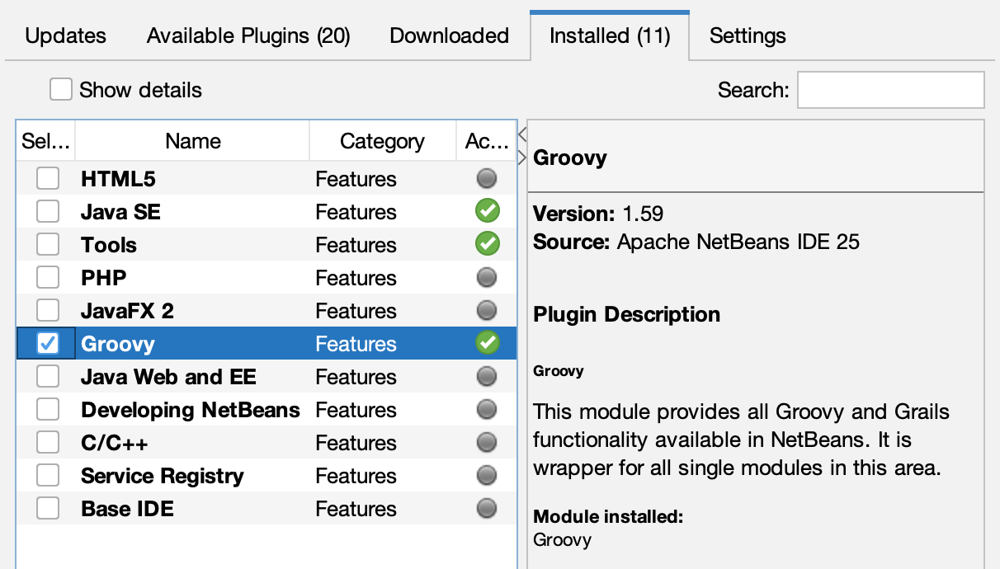
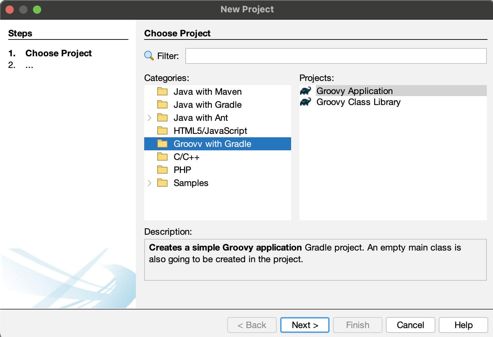
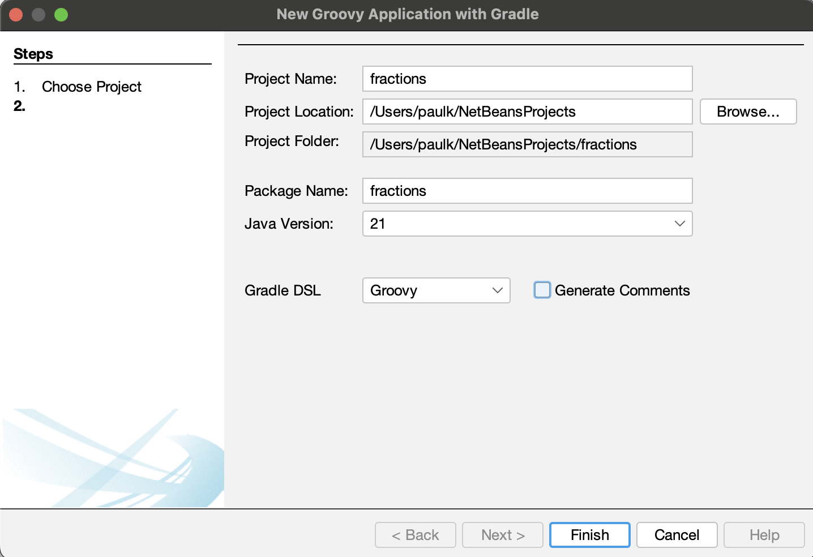
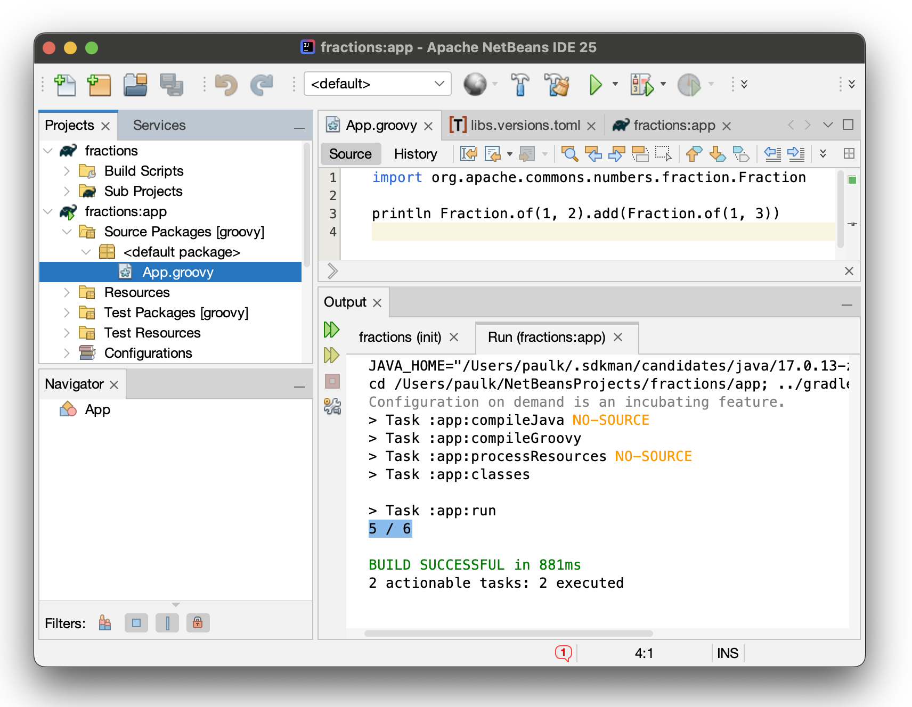
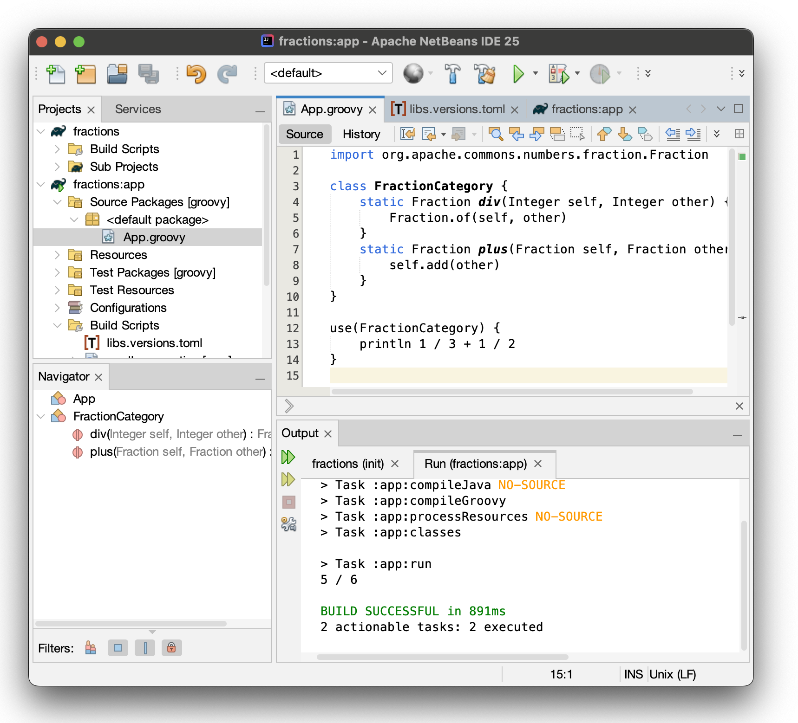
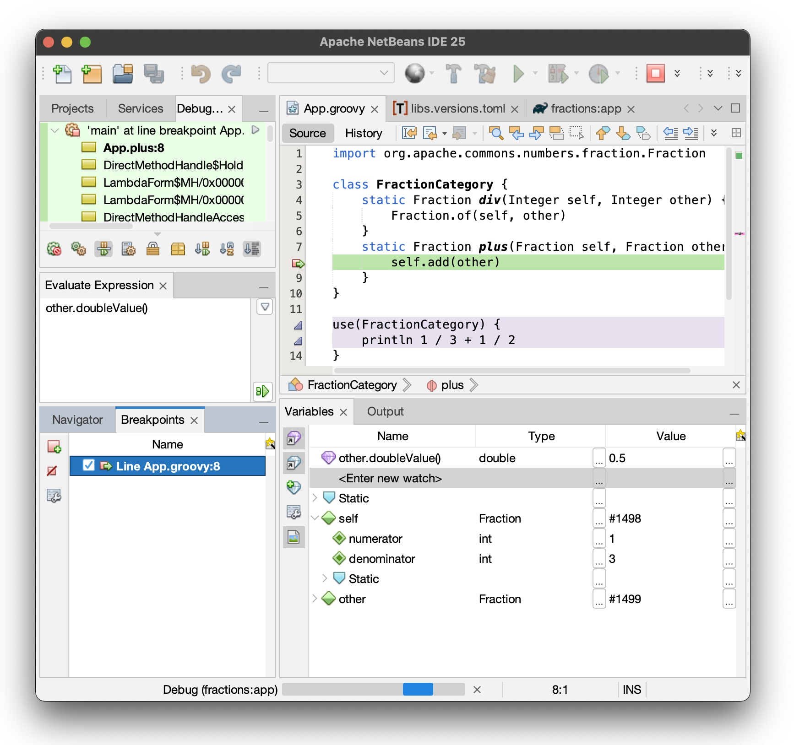
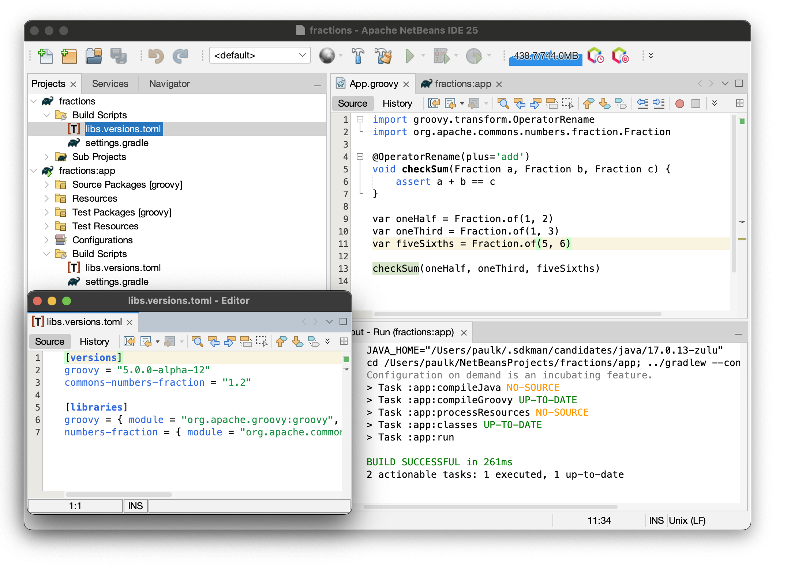

Using Apache NetBeans with Apache Groovy™

Published: 2025-02-25 10:15PM
Let’s try using the latest Apache NetBeans with Apache Groovy.
The Apache NetBeans project recently announced the release of Apache NetBeans 25. Let’s take it for a spin with Apache Groovy.
We’ll assume you have downloaded it as per the
NetBeans download page.
If you haven’t used NetBeans with Groovy before, you might need to enable
to Groovy plugin. Select Tools → Plugins → Installed, Check Groovy and click on Activate, when finished, you should see a screen like this:

Next, we are going to create a new project, select File → New Project… → Groovy with Gradle.

Select Groovy Application then click Next.
Now, fill in the project details:

We are going to create a little script that uses some fraction functionality from the
Apache Commons Number library.
We’ll call the project fractions. Click Finish when ready.
This now creates a partially filled out project using the Gradle init task.
It defines some useful libraries, sets up test and main source sets for us,
creates a versions catalog, and creates an app subproject.
It has set up some nice dependencies like the
Spock testing framework,
but we won’t use that in this post.
So, for our little script, we’ll prune back the dependencies to just those we need. The versions toml file becomes:
[versions]
groovy = "3.0.22"
commons-numbers-fraction = "1.2"
[libraries]
groovy = { module = "org.codehaus.groovy:groovy", version.ref = "groovy" }
numbers-fraction = { module = "org.apache.commons:commons-numbers-fraction", version.ref = "commons-numbers-fraction" }We’ll also prune the Gradle build file slightly to this:
plugins {
id 'groovy'
id 'application'
}
repositories {
mavenCentral()
}
dependencies {
implementation libs.groovy
implementation libs.numbers.fraction
}
java {
toolchain {
languageVersion = JavaLanguageVersion.of(21)
}
}
application {
mainClass = 'App'
}We can now create our script. It’s just one import statement and then one line of code:

Running the script shows the expected output of 5 / 6. The fractions library
is good at getting exact results which might otherwise be prone to rounding errors.
Let’s try a bit of Groovy fun. We’ll define a category to make working with fractions a little nicer. Groovy supports a number of metapgramming mechanisms that let you
add methods to classes at compile time or runtime. In this case, we’ll add a
div method to the Integer class and a plus method to the Fraction class.
These happen to be methods designed to work with Groovy’s operator overloading.
The use method lets us apply this change to a select code block.
That way we won’t impact using the Integer and Fraction classes
without these changes in other places.

The magic is in the code fragment println 1 / 3 + 1 / 2. The expression 1 / 3
works like a factory method for fractions. The + operator adds the fractions.
|
Note
|
As an aside, Groovy’s compiler configuration and scripting support
means that we could hide away the definition of the FractionCategory
class and the use call if we wanted to, leaving a script with
just the println 1 / 3 + 1 / 2 statement. This might be appropriate
if we were setting up an environment for data scientists to write
script with fractions.
|
But we haven’t finished yet. IDE’s should let us debug our code.
Let’s put a breakpoint on the statement in the plus method of the
FractionCategory class, and then run with debug.

Execution has halted. We can inspect the self and other variables and
add watch expressions like other.doubleValue().
The default Groovy version generated by the Gradle init invocation earlier
was the latest Groovy 3 version.
But we can easily change that. Let’s swap to Groovy 5 (currently in alpha releases)
and look at a new Groovy 5 feature, the OperatorRename AST transform.
If provides an alternative to our earlier category. Simplify slightly, it changes operator overloading in early parsing. You can use operator overloading in the source code, and it is renamed to normal method calls, removing the need for subsequent metaprogramming.

So, the + in the assert statement at line 6 is converted into
an add method call instead of Groovy’s normal plus operator overloading method call.
You can read more about this new feature in the
Groovy 5 release notes.